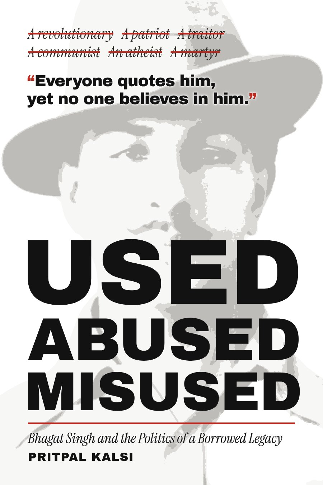

(About)
I've always been an observer.
I grew up in New Delhi living inside stories — the ones in books, the ones on the screen. I kept most of them to myself. Anyone who knows me well will tell you that.
Then life took the long way round. I married young and started out in marketing at Maruti Suzuki. In 1998 I joined network marketing, among its earliest pioneers in India, and went on to build my own company: more than 200 products, from electronics to consumer durables, moved by over five lakh distributors across the country. In 2005 I started a financial services firm in wealth management. Along the way I've travelled to more than 30 countries.
The stories never left. I made music videos in 2001. In 2012 I earned a diploma in filmmaking from the New York Film Academy and went on to make short films. I set out more than once, and each time life had other plans. Through all the building, a quiet sense that something was missing.
So I stopped waiting.
Today I write books that question what we're told, and run Timbuktu Studios, a home for film production and publishing.

MLM Zombies
Because I was there. I've sat on both sides of the table: as a marketer, and as the man running the company. I watched people grow. I watched them lose their minds, lose everything, and some turn into cult figures of their own. I also met remarkable people, learned from the very best, and had the honour of mentoring thousands. I know the good, the bad and the ugly of this business.

Used Abused Misused
Bhagat Singh has been my hero since childhood. I've read everything I could find about him, and about many great people since. With no one else have I felt a stronger connection. At so young an age, he turned his energy into something extraordinary: a poet, a warrior, an activist, a philosopher, a citizen, a reformer against so many of society's evils. Everyone claims him. Few have truly met him. He is an eternal hero, and this book is my attempt to return him to his own words.
(Pull up a chair)
Pour a coffee.
Stay a while.
I believe in sharing stories and giving them space. So take your time, and stay as long as you like. The best conversations always go beyond the coffee. Soon, so will ours: Beyond The Coffee.